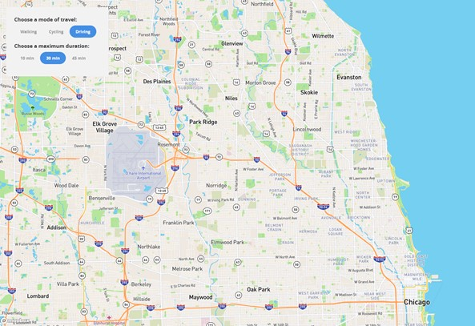

Mapbox Isochrone API
Lab 8 Option
Overview
You You will need to be able to login to your Mapbox account, that was created earlier in the course, to get your personal mapbox Access Token. You may also wish to use their studio to customize the look of maps later
This API from Mapbox will create Isochrones in a specified interval around a central point. This works by inquiring to Mapbox’s API servers to get routing information away from a specified point. Mode of transportation and time of travel can be selected by a floating control panel on the map.
API stands for Application Programming Interface, which means that it is a prewritten and reusable portion of code that will perform a certain function. This function can be called upon and used by others without them needing to write from scratch or even know what the actual coding looks like or how to write it.
Isochrone refers to a line that bounds equal travel times from a given location. They appear on a map like contour lines on a topographic elevation map or may also be displayed as polygons. They are irregular in shape so the Isochrone line may appear as a diamond or cross depending upon the street network or skewed with tendrils traveling down interstates and major roads.
To Begin
In a code editor, create a new html file and add the initial block of code below
*Check the comments of the code as you go along for help on where to insert later sections*- Notice that this code will be importing some new libraries. More information can be found at the library links
Mapbox GL JS: https://docs.mapbox.com/mapbox-gl-js/api/
Assembly: https://labs.mapbox.com/assembly/
JQuery: https://jquery.com/
<!DOCTYPE html>
<html>
<head>
<meta charset='utf-8'>
<title>Lab 8 Option - Mapbox Isochrone API</title>
<meta name='viewport' content='initial-scale=1,maximum-scale=1,user-scalable=no' />
<!-- Import Mapbox GL JS -->
<script src='https://api.tiles.mapbox.com/mapbox-gl-js/v1.12.0/mapbox-gl.js'></script>
<link href='https://api.tiles.mapbox.com/mapbox-gl-js/v1.12.0/mapbox-gl.css' rel='stylesheet' />
<!-- Import Assembly -->
<link href='https://api.mapbox.com/mapbox-assembly/v0.23.2/assembly.min.css' rel='stylesheet'>
<script src='https://api.mapbox.com/mapbox-assembly/v0.23.2/assembly.js'></script>
<!-- Import jQuery -->
<script src='https://ajax.googleapis.com/ajax/libs/jquery/3.3.1/jquery.min.js'></script>
<!-- This style section will make the map appear full screen -->
<style>
body {
margin: 0;
padding: 0;
}
#map {
position: absolute;
top: 0;
bottom: 0;
width: 100%;
}
</style>
</head>
<body>
<!-- Create a container for the map -->
<div id='map'></div>
<!-- You will Insert the code specifying the time interval controls here!!!!!!! -->
<script>
mapboxgl.accessToken = 'add your mapbox access token here'; // Add your Mapbox access token
var map = new mapboxgl.Map({ //more about Mapbox GL here https://docs.mapbox.com/mapbox-gl-js/api/
container: 'map', // Specify the container ID
style: 'mapbox://styles/mapbox/streets-v11', // Specify which map style to use, this is the basic mapbox street layer, but can be changed to a custom style if created in the mapbox studio this can be changed
center: [-87.7187, 41.9804], // Specify the starting position, NEIU here
zoom: 11, // Specify the starting zoom
});
// Insert the variable for the ISO here!!!
</script>
</body>
</html>
Add Controls
For this map we are going to make it interactive by adding a control panel that will toggle the query for travel mode and time. Each time a button is switched, the API will receive a new query that will draw the appropriate isochrone.
- This API can calculate for walking, cycling, and driving. You may include only one, two, or all three.
The time for travel can be any whole minute interval from 1-60 minutes.
- Insert the next block of code within the body of your existing code, below the div container for the map. Notice that this is a new div element. Anything placed within this will be used to style the container for the control panel. This is where you would apply different colors and text to change the display of the controls and position
<!--Create the Control toggles--> <div class='absolute fl my24 mx24 py24 px24 bg-gray-faint round'> <form id='params'> <h4 class='txt-m txt-bold mb6'>Choose a mode of travel:</h4> <!-- change the string here to edit the text on the control display --> <div class='mb12 mr12 toggle-group align-center'> <label class='toggle-container'> <input name='profile' type='radio' value='walking'> <div class='toggle toggle--active-null toggle--null'>Walking</div> </label> <label class='toggle-container'> <input name='profile' type='radio' value='cycling'> <div class='toggle toggle--active-null toggle--null'>Cycling</div> </label> <label class='toggle-container'> <input name='profile' type='radio' value='driving' checked> <!-- the 'checked' included means that the driving profile will be selected when the map loads --> <div class='toggle toggle--active-null toggle--null'>Driving</div> </label> </div> <h4 class='txt-m txt-bold mb6'>Choose a maximum duration:</h4> <!-- change the string here to edit the text on the control display --> <div class='mb12 mr12 toggle-group align-center'> <label class='toggle-container'> <input name='duration' type='radio' value='10'> <!-- change the string here to edit the interval of time that will be queried --> <div class='toggle toggle--active-null toggle--null'>10 min</div> <!-- also make sure to update the label here to the correct time --> </label> <label class='toggle-container'> <input name='duration' type='radio' value='30' checked> <!-- the 'checked' included means that the time duration of 30 minutes will be selected when the map loads --> <div class='toggle toggle--active-null toggle--null'>30 min</div> </label> <label class='toggle-container'> <input name='duration' type='radio' value='45'> <div class='toggle toggle--active-null toggle--null'>45 min</div> </label> <!-- Note that the intervals may be any whole minute interval but has a maximum of 60. The section from <label> to </Label> below specifies the time intervals, you may insert another label feature for a fourth interval, if desired, or edit the value to change the time queried, just be sure to change the label id to match --> </form> </div>Save the code & Reload the map, it should look like the one below with a sidebar of controls. You may Switch the toggles, but they will not have any functionality yet and no isochrones are displaying.
 - Note that upon the map loading, “Driving” & “30 min” are checked. This may be changed in the code by switching which option has the text “checked” included in the input.
*One thing I have noticed is that if the page is refreshed from the browser, the API is pinged with the default options in the code, but the control toggles do not always update back to their default positions. Opening the page again or hitting enter in the address bar instead of refresh avoids this. - All three available travel profiles are included, Walking, Cycling, & Driving. There are three options for time of travel, 10,30, & 45. More may be added by including the information between the Label tags and editing the values accordingly.
- You may also wish to change the times here. They can be any whole minute value from 1-60. The value=’30’ part will change the actual inquiry to the API. The 30 min, after the toggle information will change the text displayed on the control. Make sure to update both accordingly when making edits.
See the code snippet below for clarification on which part.
<label class='toggle-container'>
<input name='duration' type='radio' value='30' checked> <!-- the 'checked' included means that the time duration of 30 minutes will be selected when the map loads -->
<div class='toggle toggle--active-null toggle--null'>30 min</div>
</label>
Make the Controls Function
// Create variables to use in getIso()
//Specify the lat/long of the point that you wish to map distances from. Here we are using NEIU. The profile and minutes specify the default selections that will be selected upon loading.
// the profile and minutes here should match what is 'checked' in the code above when the toggle options are set
var urlBase = 'https://api.mapbox.com/isochrone/v1/mapbox/';
var lon = -87.7187;
var lat = 41.9804;
var profile = 'driving';
var minutes = 30;
// Create a function that sets up the Isochrone API query then makes an Ajax call
// This API receives a query in the form of a single string of parameters. This function allows the webpage to compile the string based on the selections made in the control toggle, this will also set the isochrones
// to display polygons instead of just lines
function getIso() {
var query = urlBase + profile + '/' + lon + ',' + lat + '?contours_minutes=' + minutes + '&polygons=true&access_token=' + mapboxgl.accessToken;
$.ajax({
method: 'GET',
url: query
}).done(function(data) {
// Set the 'iso' source's data to what's returned by the API query
map.getSource('iso').setData(data);
})
};
//You will insert a point marker here!!!!!!!
map.on('load', function() {
// When the map loads, add the source and layer
map.addSource('iso', {
type: 'geojson',
data: {
'type': 'FeatureCollection',
'features': []
}
});
map.addLayer({
'id': 'isoLayer',
'type': 'fill',
// Use "iso" as the data source for this layer
'source': 'iso',
'layout': {},
'paint': {
// The fill color for the layer is set to a light grey, edit the code below to change the color of the isochrone polygons
'fill-color': '#515151',
'fill-opacity': 0.3
}
}, "poi-label");
//You will use the marker coordinates specified above when making the API call, insert that portion Here!!!!!!!!!!!
// Make the API call
getIso();
});
// Target the "params" form in the HTML portion of your code
var params = document.getElementById('params');
// When a user changes the value of travel mode or time duration by clicking a button, change the parameter's value and make the API query again
params.addEventListener('change', function(e) {
if (e.target.name === 'profile') {
profile = e.target.value;
getIso();
} else if (e.target.name === 'duration') {
minutes = e.target.value;
getIso();
}
});
- Notice that we are creating several variables to use in the function.
- urlBase is the absolute url to the Mapbox API
- lon and lat define the point which distances will be routed from. In this case it is lon/lat of NEIU
- profile and minutes define the mode of travel and time duration, these should be the default options that are checked earlier, so make the same edits here if you changed them earlier.
- query will comprise the string submitted to the API, the default would appear as 'https://api.mapbox.com/isochrone/v1/mapbox/driving/-87.7187,41.9804?contours_minutes=30&polygons=true&access_token=yourMapboxToken’
- params will be used to change the parameters to build the string, based on the toggled options
By including the optional parameter polygons=true, this will make the function draw filled polygons instead of just lines. This is easier to visualize in this case, but there may be times when only lines are desired. That portion can be removed from the query variable to make lines instead.
The map.addLayer function contains some formatting for the new geojson layer which will draw the isochrones. You may change the fill color and opacity here. I would recommend leaving some transparency to see the streets below.
We will try out a way of doing something simpler later.
For now, we will continue to focus on a single point.
Add a Marker
- It is not clear though where the point of origin is. We should add a marker, so it is clear where the distances are calculated from.
- To do this, add the final two parts of code below. This will create a new variable to be used as a marker, define the location of the marker, and add it to the map.
Insert this section into the code before the map loads the iso layers
//NEIU Marker, which will define the variable and color, notice that the location is a separate variable and the two will be combined later.
var marker = new mapboxgl.Marker({
'color': '#133CF3' //change this to edit the pin marker
});
// Create a LngLat object to use in the marker initialization
// https://docs.mapbox.com/mapbox-gl-js/api/#lnglat
var lngLat = {
lon: lon,
lat: lat
};
// Initialize the marker at the query coordinates
marker.setLngLat(lngLat).addTo(map);
Compare to the IsochroneNEIU_CompletedCode.html if you are unable to make yours work. Just be sure to add your access token. You may also access the full screen Map
Make Isochrones for Two Points
- Should you want to compare the area that can be accessed from two different points within the same time frame, like in the Meet in the Middle Demo. There are several ways this can be accomplished, but with our current map it can be made possible by duplicating the set of functions and variables that ping the API and draw the isochrone layers, and then editing them for an additional location.
- You can insert the following code into your existing file to try out a second point. This may work best for you with the unedited code from above since the profiles and times need to be matched in both to work with the controls. If you made changes, just make sure to update to match in the second set or work with the IsochroneNEIU_CompletedCode.html for the next portion and make edits to both later.
- Insert this next code at the end of the body portion, just before the script end tag.
//---------------------------------------First API Inquery Above, 2nd below------------------------------------------------------------------
//Reusing base from above
var lon2 = -87.805833; //the same function as above, just with 2 added to the end of the variable names to make them unique
var lat2 = 41.908760; //the same function as above, just with 2 added to the end of the variable names to make them unique
//reusing travel profile from and time from above since they will match
function getIso2() {
var query2 = urlBase + profile + '/' + lon2 + ',' + lat2 + '?contours_minutes=' + minutes + '&polygons=true&access_token=' + mapboxgl.accessToken; //same as above just with 2 added to the end of the second point variables to make them unique
$.ajax({
method: 'GET',
url: query2
}).done(function(data) {
// Set the 'iso' source's data to what's returned by the API query
map.getSource('iso2').setData(data); //updated to iso2
})
};
var marker2 = new mapboxgl.Marker({ //a second marker to denote the additional point
'color': 'BFEE0F' //change this to edit the pin marker
});
var lngLat2 = {
lon: lon2,
lat: lat2
};
map.on('load', function() {
// When the map loads, add the source and layer
map.addSource('iso2', {
type: 'geojson',
data: {
'type': 'FeatureCollection',
'features': []
}
});
map.addLayer({
'id': 'isoLayer2',
'type': 'fill',
// Use "iso" as the data source for this layer
'source': 'iso2',
'layout': {},
'paint': {
// The fill color for the layer is set to a light purple, edit to change the color of the isochrone polygon
'fill-color': '#515151',
'fill-opacity': 0.3
}
}, "poi-label");
// Initialize the marker at the query coordinates
marker2.setLngLat(lngLat2).addTo(map);
// Make the API call
getIso2();
});
//Able to Reuse the Params variable from before since it just deals with the toggles. This portion does have to be added to the second, getiso2, function to update it as well
params.addEventListener('change', function(e) {
if (e.target.name === 'profile') {
profile = e.target.value;
getIso2();
} else if (e.target.name === 'duration') {
minutes = e.target.value;
getIso2();
}
});
Your map should look like the one below
Possible Deliverables
Extra Content/Resources
https://github.com/mapbox/mapbox-isochrone
Here is the full screen Map.
There are also several options out there for making isochrones or similar routing. Here Technology mentioned their routing and other navigation API’s.
There are several free interactive isochrone applications here are a few others to look at.
You may also wish to explore Mapbox's studio and upload your own Geojson data, which can be used to make tilesets and custom map styles which contain the data and would be added to the map all from the style url. See an example here which has polygons for City parks greater than 5 acres. Labels/popups may also be added by referencing the dataset within the code.